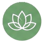

Nossa História
Mais de 35 anos promovendo bem-estar, equilíbrio e qualidade de vida por meio das terapias integrativas.
Quem Somos
A Global Terapias nasceu de uma trajetória de mais de 35 anos dedicada ao estudo do bem-estar, do autoconhecimento e das terapias integrativas. Desde muito jovem, sua fundadora desenvolveu interesse pelas áreas relacionadas à consciência, espiritualidade e desenvolvimento humano, iniciando uma jornada de aprendizado que a levou a buscar formação com pioneiros e referências nacionais em técnicas como Aromaterapia, Radiestesia, Cromoterapia, Reiki, Barras de Access e Terapia Multidimensional.
Ao longo dos anos, realizou atendimentos em diversas regiões do estado do Rio de Janeiro, auxiliando pessoas na busca por equilíbrio físico, emocional, mental e energético. Atualmente, continua seu trabalho com dedicação e acolhimento, unindo experiência, conhecimento e uma abordagem humanizada para promover mais harmonia, qualidade de vida e bem-estar por meio das terapias integrativas.
Nossa Missão
Bem-estar
Promover qualidade de vida e equilíbrio emocional através das terapias integrativas.
Acolhimento
Valorizar o cuidado humanizado e o respeito às necessidades individuais.
Saúde Integral
Cuidar do indivíduo em sua totalidade física, emocional e mental.

Nossa filosofia
Cada pessoa possui uma jornada única. O processo terapêutico deve respeitar sua individualidade, oferecendo acolhimento, escuta e ferramentas que favoreçam o autoconhecimento e o equilíbrio integral.
Acreditamos que o cuidado integrativo é um caminho de transformação, promovendo a saúde e o bem-estar em todas as dimensões do ser humano, não substituindo as terapias convencionais e sim integrando-as.
Sobre nossas principais terapias oferecidas
Radiestesia
Utiliza instrumentos como pêndulos para identificar e harmonizar desequilíbrios energéticos do corpo e do ambiente.
Aromaterapia
Emprega óleos e essências terapêuticas para promover equilíbrio emocional, energético e bem-estar integral
Terapia Multidimensional
Atua na harmonização de bloqueios emocionais e energéticos, favorecendo autoconhecimento e expansão da consciência.
Barras de Access
Técnica que utiliza toques suaves em pontos específicos da cabeça para reduzir padrões limitantes, estresse e sobrecarga mental.
Contatos
Instagram: @magdaessenciaeharmonia https://www.instagram.com/magdaessenciaeharmonia/
Nosso objetivo é ampliar o acesso à informação sobre as Práticas Integrativas e Complementares em Saúde por meio da tecnologia.